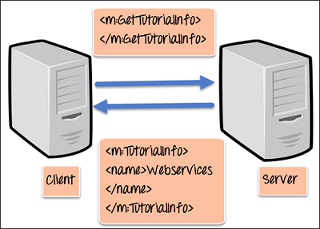
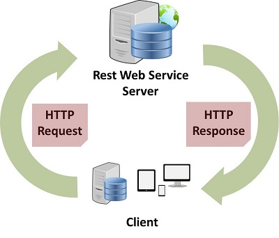

SOAP is known as a transport-independent messaging protocol. SOAP is based on transferring XML data as SOAP Messages. Each message has something which is known as an XML document. Only the structure of the XML document follows a specific pattern, but not the content. The best part of Web services and SOAP is that its all sent via HTTP, which is the standard web protocol.
+ Each SOAP document needs to have a root element known as the
+ The "envelope" is in turn divided into 2 parts. The first is the header, and the next is the body.
+ The header contains the routing data which is basically the information which tells the XML document to which client it needs to be sent to.
+ The body will contain the actual message.
The diagram below shows a simple example of the communication via SOAP.
Restful Web Service is a lightweight, maintainable, and scalable service that is built on the REST architecture. Restful Web Service, expose API from your application in a secure, uniform, stateless manner to the calling client. The calling client can perform predefined operations using the Restful service. The underlying protocol for REST is HTTP. REST stands for REpresentational State Transfer.
